Summit Initiative Solutions
A step-by-step guide to the blog editor on your website. No technical knowledge needed. If you can write an email, you can do this.
summitinitiativesolutions.com/admin, sign in with your editor password, click New post, write or paste your article, click Publish. It is live in a minute or two. Then copy the link and paste it into your LinkedIn post.In the pictures below, the yellow numbered boxes match the numbered steps in the text.
https://summitinitiativesolutions.com/admin. Bookmark it so it is one click next time.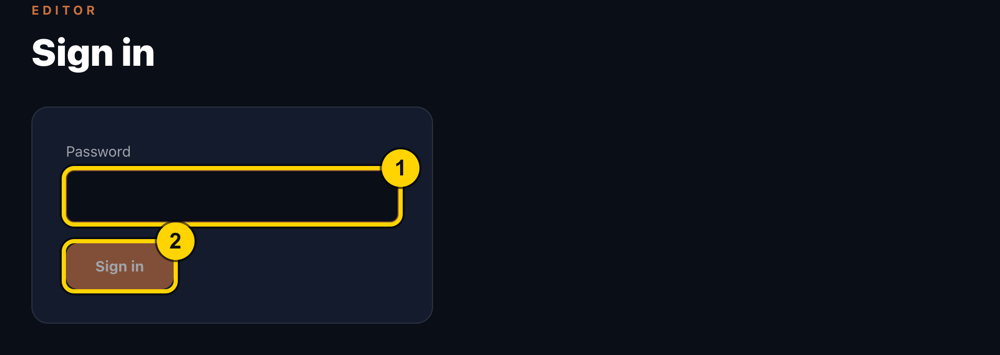
You stay signed in on that computer for 7 days. On a shared computer, click Sign out when you finish.
After signing in you see every post on your blog, newest first.
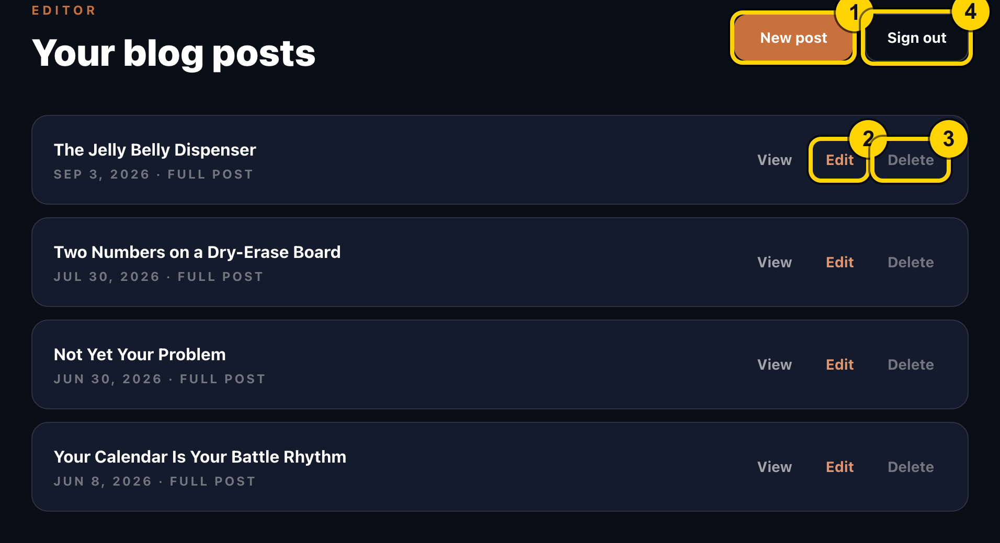
View opens the post as the public sees it.
Click New post. Start with the boxes at the top.
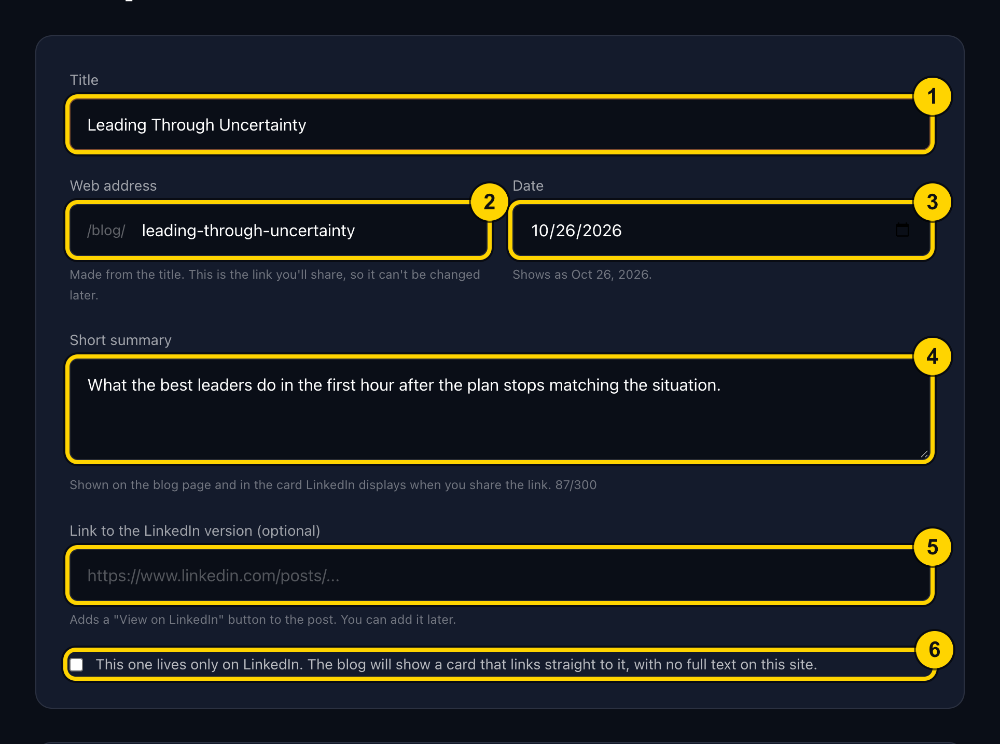
leading-through-uncertainty). You normally do not need to touch it. Once published, avoid changing it, because links you have already shared would stop working.https://). Leave it blank otherwise.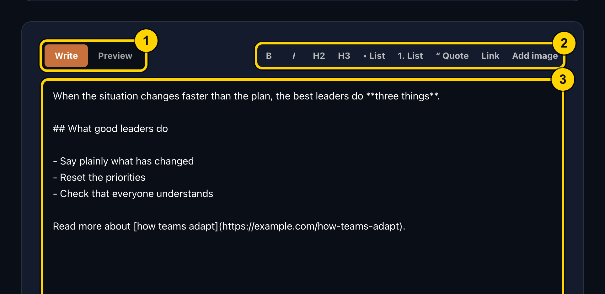
Tip: you can paste straight from Word or Google Docs. Headings, bold, italics, lists and links are carried over automatically.
To format text, select the words and click a button, or just click the button and type. You will see small symbols such as **bold** in the box; that is normal. The Preview tab shows the real result.
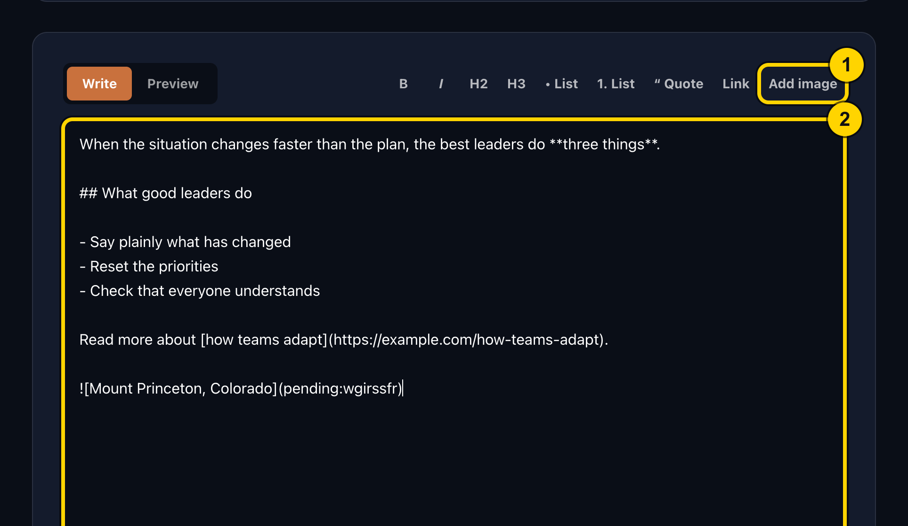
 appears in the text 2. Replace the words Describe this image with a short description of the picture (it helps readers who use screen readers). Leave the rest of the line alone; it turns into the picture when you publish.Pictures are shrunk automatically. Supported types are JPG, PNG, GIF and WebP. Up to 12 pictures per post.
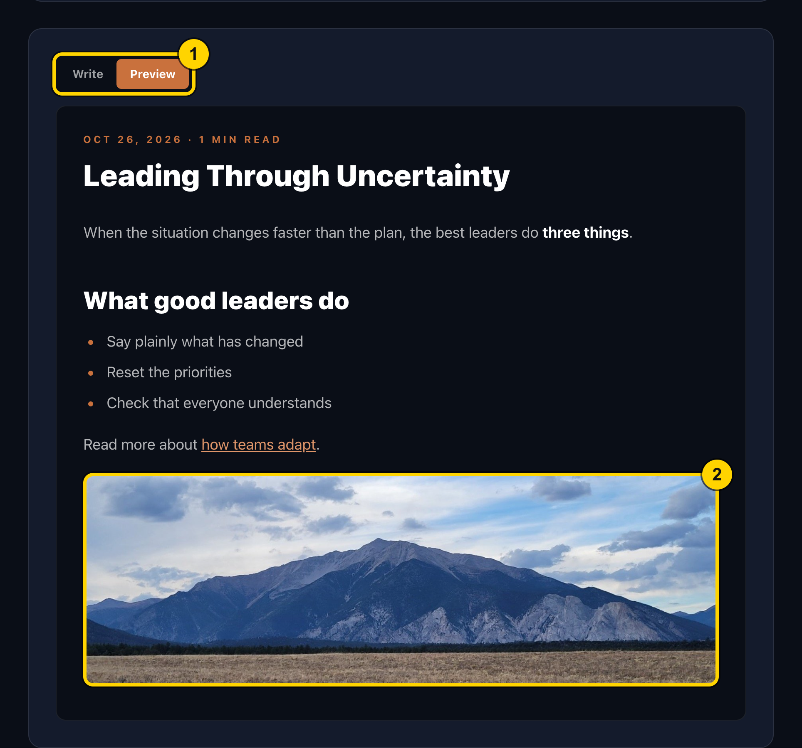
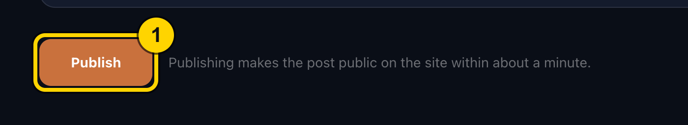
Your writing is saved in your browser as you type, so an accidental refresh or closed tab will not lose it (pictures are not saved in a draft, so you would add them again). Nothing goes public until you click Publish.
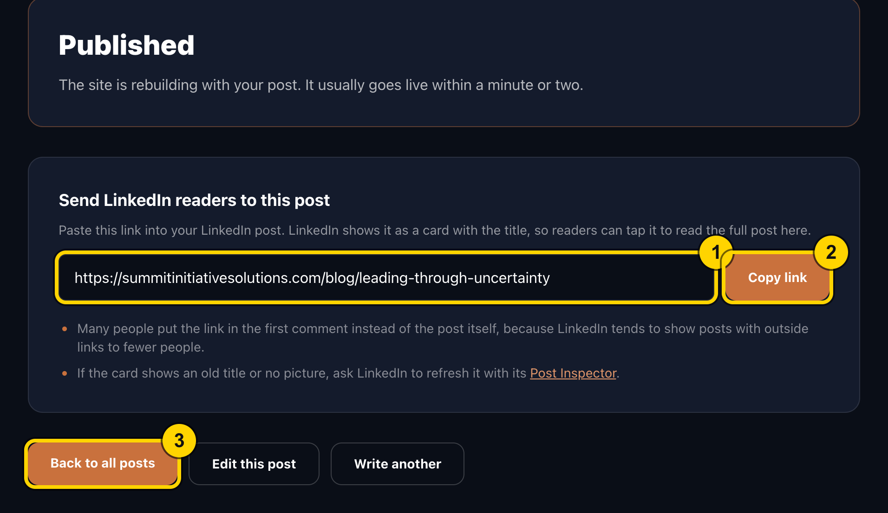
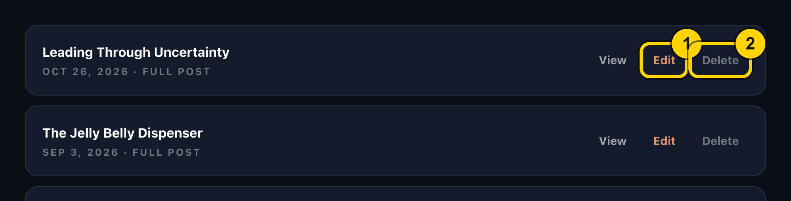
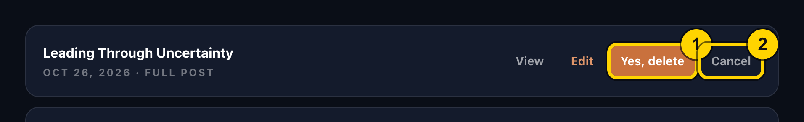
Deleting takes the post off the site within a minute or two. Any LinkedIn post that pointed to it will then show a "page not found", so only delete when you are sure.
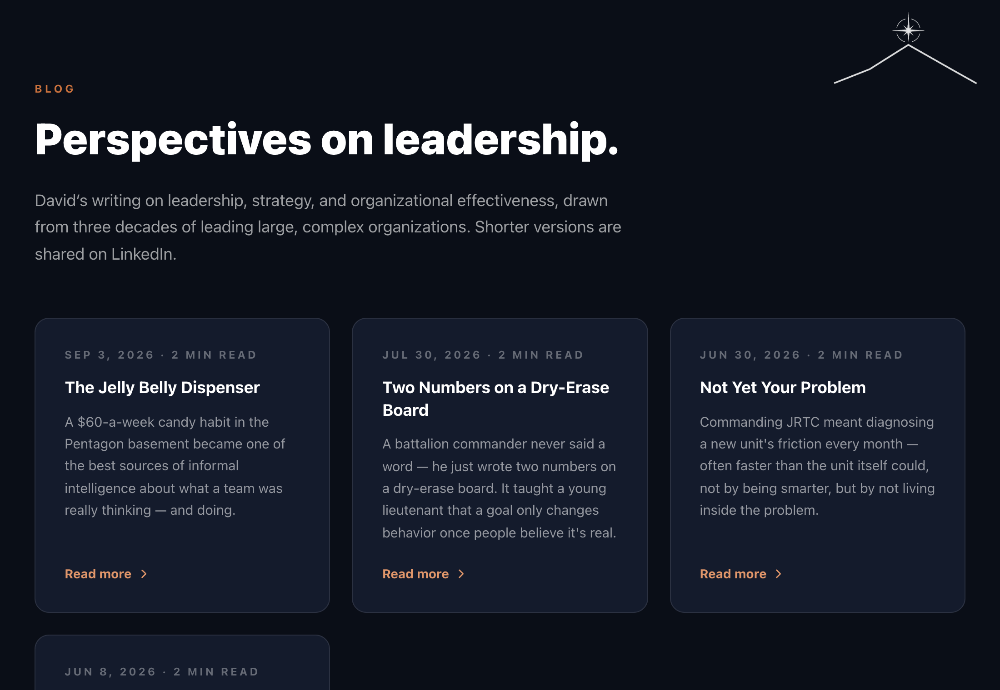
| What you see | What to do |
|---|---|
| "The editor isn't switched on yet." | The site setup is incomplete. Contact Adam; see the maintainer notes below. |
| Password is rejected | Check caps lock and try again. After several wrong tries in a row you are locked out for about 15 minutes. If you forgot it, Adam can set a new one. |
| "Link must start with https://" on the LinkedIn box | Paste the full web address copied from LinkedIn (starting https://), or clear the box. |
| Publish fails or says someone else changed the site | Wait a few seconds and click Publish again. Your text is not lost. |
| Picture is refused | Use a JPG, PNG, GIF or WebP picture. Each picture must be under about 1.5 MB after shrinking, and a post can hold about 3.8 MB of pictures in total. |
| My post is not on the blog page yet | Give it two minutes, then refresh. If it is still missing after ten, tell Adam. |
| Signed out unexpectedly | Sessions last 7 days. Sign in again. Your unfinished text is kept in the browser (pictures are not). |
content/posts using a token. Vercel sees the commit and rebuilds the site (about 1 to 2 minutes). Posts are plain files, so the full history is in GitHub.ADMIN_PASSWORD (12+ characters), ADMIN_SESSION_SECRET (16+ random characters), BLOG_GITHUB_TOKEN, BLOG_GITHUB_REPO, BLOG_GITHUB_BRANCH. Changing any of them needs a redeploy before it takes effect.ADMIN_PASSWORD in Vercel, then redeploy.npm test and the fake GitHub server.